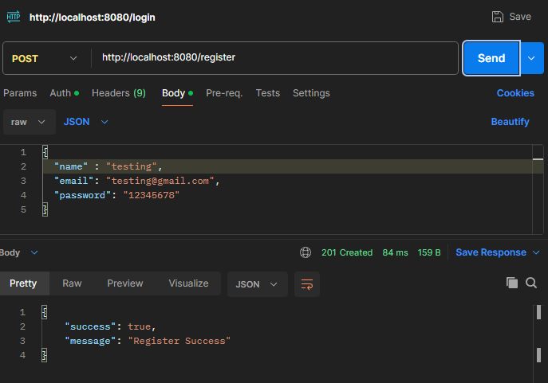
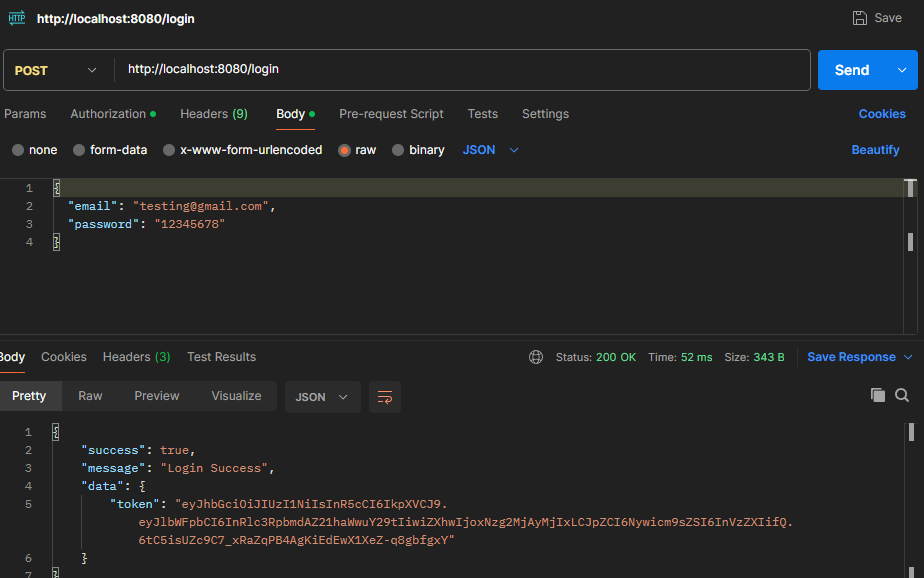
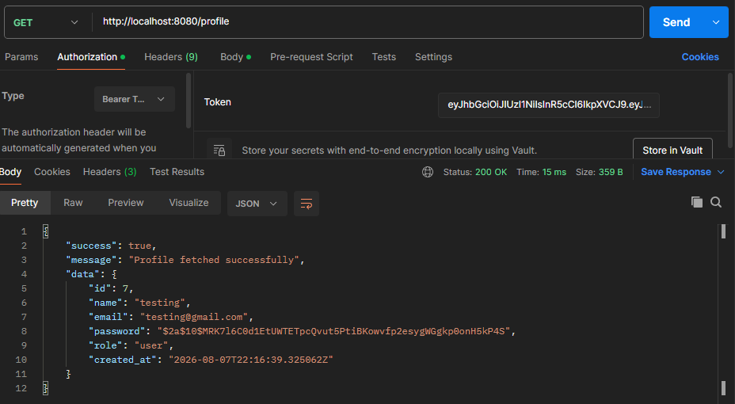

Auth API with Go
Secure authentication REST API built using Go and PostgreSQL. This project implements JWT authentication, password hashing, middleware protection, and layered architecture using Repository Pattern and Service Layer approach.
Overview
Auth API is a backend authentication service designed to handle secure user registration, login, and protected user resources. The project focuses on implementing secure backend practices such as password hashing, JWT token authentication, environment configuration, and clean separation between HTTP handling, business logic, and database operations.
Architecture
The application uses a layered architecture where each component has a clear responsibility. HTTP requests are handled by handlers, business rules are managed in the service layer, and database operations are isolated inside the repository layer.
Client
↓
Routes
↓
Middleware
(JWT Validation)
↓
Handler
↓
Service
(Business Logic)
↓
Repository
↓
PostgreSQL
Features
- User Registration
- User Login
- Password hashing using bcrypt
- JWT token generation
- JWT middleware authentication
- Protected profile endpoint
- Environment configuration using .env
- Standardized JSON response
API Testing (Postman)
API testing was performed using Postman to verify authentication flow including user registration, login, JWT authorization, and protected endpoint access.
User Register

User Login & JWT Token

Protected Profile Endpoint

Database Design
User data is stored in PostgreSQL with secure password storage using bcrypt hashing. Passwords are never stored in plain text — only the hashed value is persisted to the database.
users
id SERIAL PRIMARY KEY
name VARCHAR(255)
email VARCHAR(255) UNIQUE NOT NULL
password VARCHAR(255) NOT NULL -- bcrypt hash
role VARCHAR(50)
created_at TIMESTAMP DEFAULT NOW()